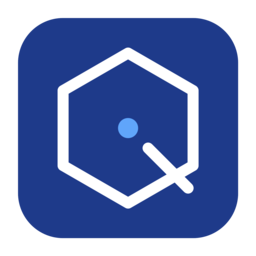
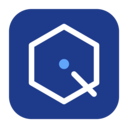
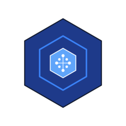
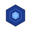
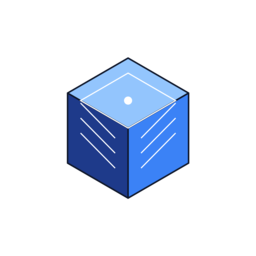
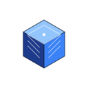
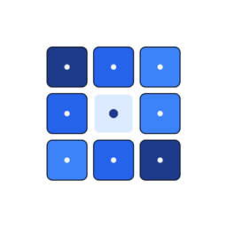
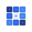
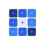
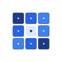

Quản trị tài nguyên máy tính — Modern Geometric • Blue Indigo Palette


128px

64px

128px

32px
64px
128pxpreview.html trong trình duyệt để xem tất cả logo và chọn logo bạn thích nhất.favicon.ico đa phân giải.favicon.ico vào thư mục gốc của website.<head>:
<link rel="icon" type="image/x-icon" href="/favicon.ico"> <link rel="icon" type="image/png" sizes="32x32" href="/favicon-32x32.png"> <link rel="icon" type="image/png" sizes="16x16" href="/favicon-16x16.png"> <link rel="apple-touch-icon" sizes="180x180" href="/apple-touch-icon.png"> <link rel="manifest" href="/site.webmanifest">